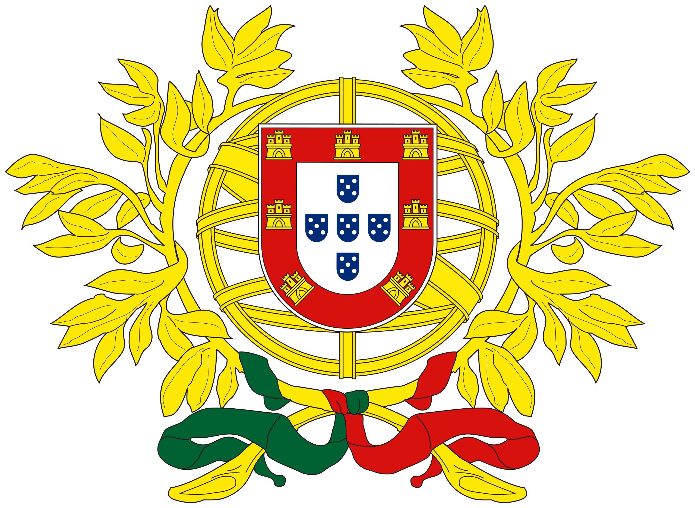

Portugal
Caldo Verde


A traditional soup from Portugal that translates to "green soup" due to its ingredients of kale, potatoes, and olive oil. It's a hearty meal for the simple life and a reasonable appetite!
Ingredients
- Olive Oil: 4 tablespoons
- Cold Water: 2 quarts
- Onion: 1, minced
- Clove Garlic: 1, minced
- Potatoes: 6, peeled and thinly sliced
- Linguica Sausage: 6 ounces, thinly sliced
- Salt: 2 1/2 teaspoons
- Ground Black Pepper: sprinkle to taste
- Kale: 1 pound, rinsed and julienned
Steps
- In a large saucepan over medium heat, cook onion and garlic in 3 tablespoons olive oil for 3 minutes.
- Stir in potatoes and cook, stirring constantly, 3 minutes more. Pour in water, bring to a boil, and let boil gently for 20 minutes, until potatoes are mushy.
- Meanwhile, in a large skillet over medium-low heat, cook sausage until it has released most of its fat, 10 minutes. Drain.
- Mash potatoes or puree the potato mixture with a blender or food processor. Stir the sausage, salt and pepper into the soup and return to medium heat. Cover and simmer 5 minutes.
- Just before serving, stir kale into soup and simmer, 5 minutes, until kale is tender and jade green. Stir in the remaining tablespoon of olive oil and serve at once.